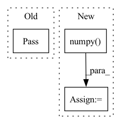

Pattern ID :9621
Before Change
gallery_feats = feat
else:
gallery_feats = np.concatenate((gallery_feats, feat), 0)
pass
sys.stdout.write(
"\r>> LoadGallery[{}/{}] ".format(i, gallery_len))
sys.stdout.flush()
After Change
group_inter, final, group_prob, group_label = model(torch_loader(cv2.imread(file_path)).unsqueeze(0))
feat = final / torch.norm(final, p=2, keepdim=False)
feat = feat.detach().cpu().reshape(1, 256).numpy()
if isinstance(gallery_feats, dict) is True:
gallery_feats = feat
else:In pattern: SUPERPATTERN
Frequency: 5
Non-data size: 3
Instances Fragment ID: 34726192
Project Name: leoluopy/groupfacepytorch
Commit Name: 20388625302d7211146c80f4badced123c62fe30
Time: 2020-12-21
Author: lpy1990fff
File Name: train.py
M Class Name: AnonimousClass
N Class Name: AnonimousClass
M Method Name: load_gallery(2)
N Method Name: load_gallery(2)
M Parent Class:
N Parent Class:
M File Name: train.py
N File Name: train.py
M Start Line: 24
M End Line: 29
N Start Line: 25
N End Line: 32
Before Change
self.X = torch.from_numpy(X)
def _get_edges(self):
pass
def _get_edge_weights(self):
pass
After Change
def _get_edges(self):
edge_indices, values = dense_to_sparse(self.A)
edge_indices = edge_indices.numpy()
self.edges = edge_indices
def _get_edge_weights(self):
self.edge_weights = np.ones(self.edges.shape[1]) Fragment ID: 34726195
Project Name: benedekrozemberczki/pytorch_geometric_temporal
Commit Name: 476ba2ddd3d429489554d9a2b13cb8df790da6f4
Time: 2021-02-21
Author: pms69@cam.ac.uk
File Name: torch_geometric_temporal/data/dataset/metr_la.py
M Class Name: METRLADatasetLoader
N Class Name: METRLADatasetLoader
M Method Name: _get_edges(1)
N Method Name: _get_edges(1)
M Parent Class: object
N Parent Class: object
M File Name: torch_geometric_temporal/data/dataset/metr_la.py
N File Name: torch_geometric_temporal/data/dataset/metr_la.py
M Start Line: 45
M End Line: 45
N Start Line: 46
N End Line: 48
Before Change
ptwt_res = _separable_conv_wavedecn(pt_data, "haar", mode="reflect", levels=2)
// TODO: test results.
pass
After Change
ptwt_res_lists.extend(
[tensor for ptwt_dict in ptwt_res[1:] for _, tensor in ptwt_dict.items()]
)
flat_ptwt_res = [
tensor.numpy() for tensor_list in ptwt_res_lists for tensor in tensor_list
]
pywt_fine_scale = list(filter(lambda x: x.shape == approx.shape, flat_pywt_res)) Fragment ID: 34726197
Project Name: v0lta/pytorch-wavelet-toolbox
Commit Name: 2cf1e6d62827985fd0f862dea2a1bb92bb012ade
Time: 2022-12-30
Author: moritz@wolter.tech
File Name: tests/test_separable_conv_fwt.py
M Class Name: AnonimousClass
N Class Name: AnonimousClass
M Method Name: test_separable_conv(1)
N Method Name: test_separable_conv(0)
M Parent Class:
N Parent Class:
M File Name: tests/test_separable_conv_fwt.py
N File Name: tests/test_separable_conv_fwt.py
M Start Line: 41
M End Line: 52
N Start Line: 42
N End Line: 71
Before Change
pass
def _get_edges_and_weights(self):
pass
def _generate_task(self, num_timesteps_in: int=12, num_timesteps_out: int=2):
pass
After Change
def _get_edges_and_weights(self):
edge_indices, values = dense_to_sparse(self.A)
edge_indices = edge_indices.numpy()
values = values.numpy()
self.edges = edge_indices
self.edge_weights = values
def _generate_task(self, num_timesteps_in: int=12, num_timesteps_out: int=2): Fragment ID: 34726199
Project Name: benedekrozemberczki/pytorch_geometric_temporal
Commit Name: b60cae79e32c69c4681dc5d2f6b1966e7342eeaf
Time: 2021-03-02
Author: pms69@cam.ac.uk
File Name: torch_geometric_temporal/data/dataset/pems_bay.py
M Class Name: PemsBayDatasetLoader
N Class Name: PemsBayDatasetLoader
M Method Name: _get_edges_and_weights(1)
N Method Name: _get_edges_and_weights(1)
M Parent Class: object
N Parent Class: object
M File Name: torch_geometric_temporal/data/dataset/pems_bay.py
N File Name: torch_geometric_temporal/data/dataset/pems_bay.py
M Start Line: 22
M End Line: 22
N Start Line: 41
N End Line: 45
Before Change
pass
def inference(self):
pass After Change
// Calculate Frames rate (fps)
self.fps = convert_infr_time_to_fps(inference_time)
result = np.argmax(output_dict["scores"].numpy() ) // returns class id
return result
Fragment ID: 34726186
Project Name: neuralet/smart-social-distancing
Commit Name: bb2a42c08c45f4043683c13ddbf0959f1e58e562
Time: 2020-08-16
Author: mehraliangit@gmail.com
File Name: libs/classifiers/x86/face_mask.py
M Class Name: Classifier
N Class Name: Classifier
M Method Name: inference(2)
N Method Name: inference(1)
M Parent Class:
N Parent Class:
M File Name: libs/classifiers/x86/face_mask.py
N File Name: libs/classifiers/x86/face_mask.py
M Start Line: 11
M End Line: 11
N Start Line: 35
N End Line: 45